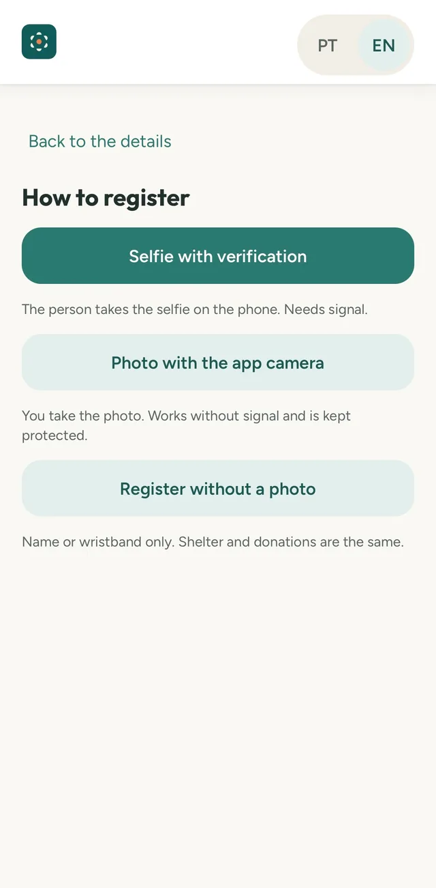
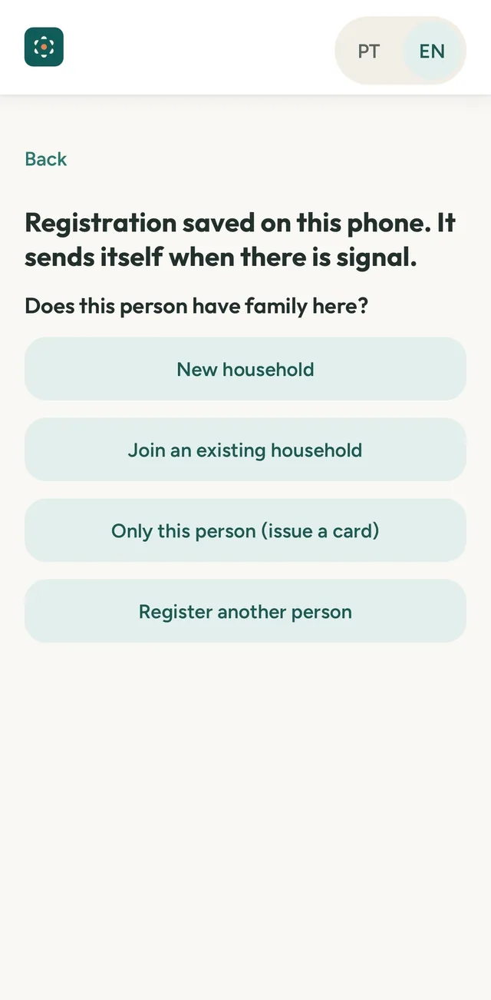
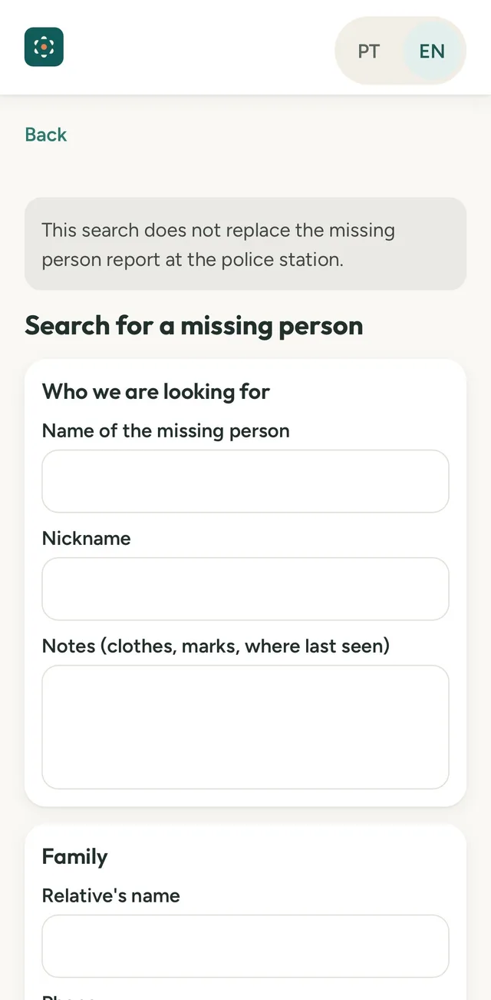
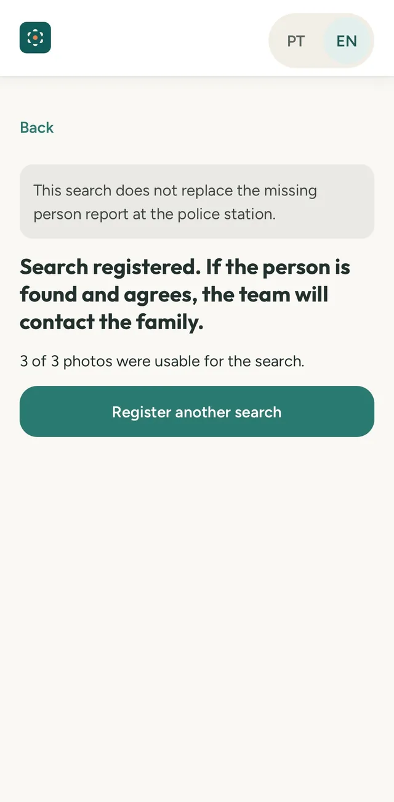
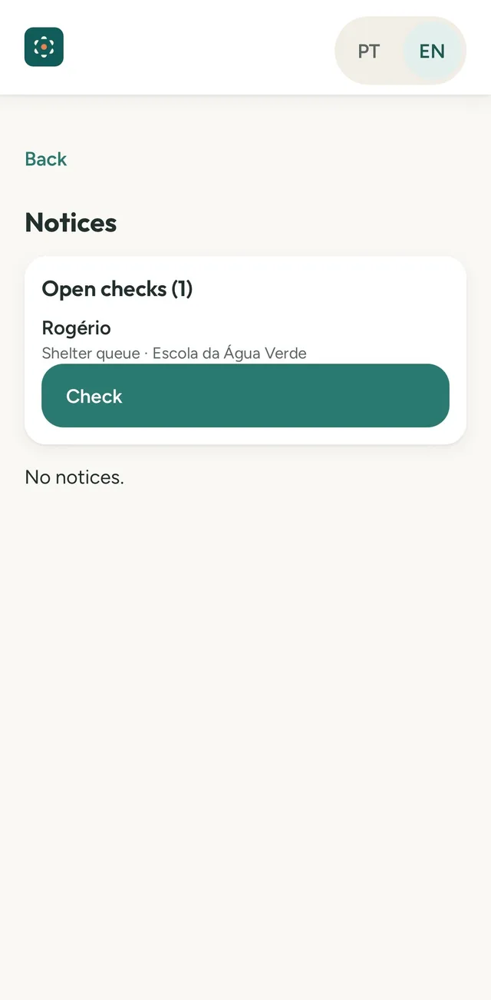
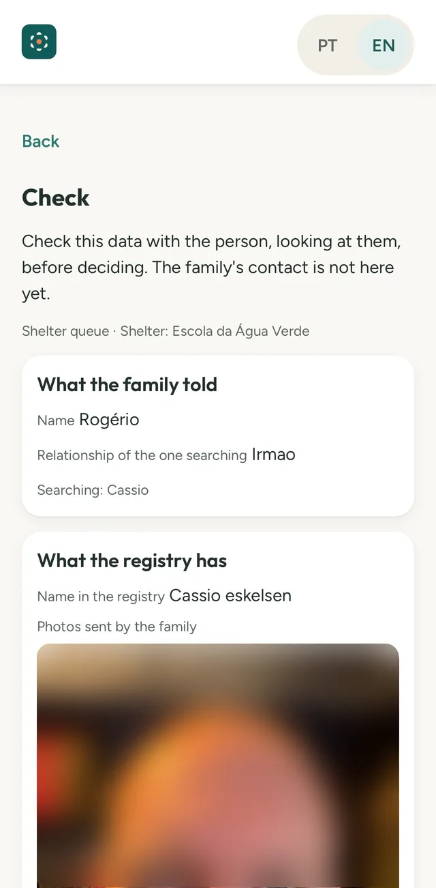
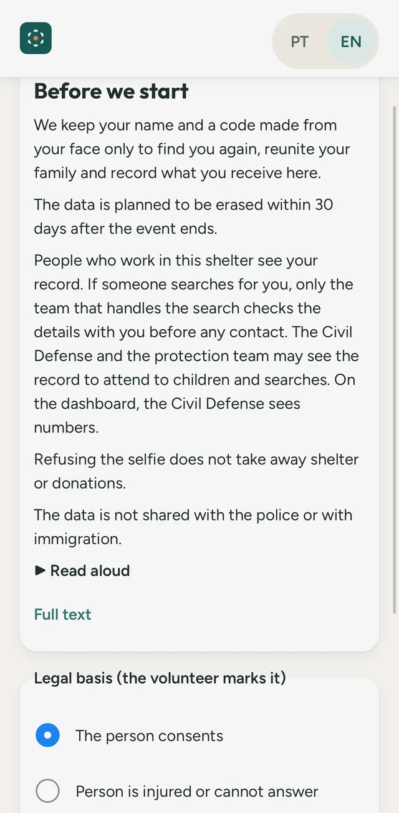

Contar gente, não cadastrosCount people, not records
Saber quantas pessoas diferentes estão abrigadas, mesmo que passem por mais de um abrigo.Know how many different people are sheltered, even if they pass through more than one shelter.
Código aberto · Em implementaçãoOpen source · Under implementation
O Taba é uma rede de abrigos para enchentes e outros desastres. Ele reconhece as pessoas pelo rosto, sem documentos, e faz os abrigos trabalharem juntos. Taba is a network of shelters for floods and other disasters. It recognizes people by their face, without documents, and makes shelters work together.
Funciona no celular, direto no navegador. Instala como app e abre sem sinal.Works on a phone, right in the browser. Installs as an app and opens without signal.
Saber quantas pessoas diferentes estão abrigadas, mesmo que passem por mais de um abrigo.Know how many different people are sheltered, even if they pass through more than one shelter.
Retirada repetida vira alerta para revisão, nunca uma recusa na hora. Quem precisa não fica sem.A repeat pickup becomes a flag for review, never an instant refusal. People in need are not left out.
Ajuda a achar parentes desaparecidos, inclusive quem não consegue dizer o próprio nome, como crianças e idosos.Helps find missing relatives, including people who cannot say their own name, like children and the elderly.
Telas reais do app, de um teste de ponta a ponta. Rostos borrados nesta página.Real app screens from an end-to-end test. Faces are blurred on this page.
Uma pessoa com um celular cria o abrigo. Na entrada, cada pessoa é registrada com selfie verificada, com a câmera do app ou até sem foto, só com nome ou pulseira. Abrigo e doação valem do mesmo jeito.One person with a phone creates the shelter. At the door, each person is registered with a verified selfie, with the app camera, or even without a photo, just a name or wristband. Shelter and donations are the same.


Quem procura um parente envia de 1 a 5 fotos, pela galeria ou câmera, ou recebe um link para preencher no próprio celular. As fotos ficam protegidas e são apagadas quando a pessoa é encontrada, a busca é encerrada ou passam 30 dias.Anyone looking for a relative sends 1 to 5 photos, from the gallery or camera, or gets a link to fill in on their own phone. Photos stay protected and are deleted when the person is found, the search is closed, or 30 days pass.


Quando o rosto bate, o voluntário confere os dados olhando para a pessoa. O contato da família só é liberado se ela aceitar. Se não quiser, nada é enviado e a busca continua para outras pessoas.When a face matches, the volunteer checks the details while looking at the person. The family’s contact is only released if the person accepts. If they do not want contact, nothing is sent and the search goes on for others.


A busca do Taba não substitui o boletim de ocorrência de desaparecimento na delegacia.Taba’s search does not replace the missing person report at the police station.

O Taba é aberto e ainda está sendo construído. Quanto mais gente testar, melhor ele fica para o próximo desastre.Taba is open and still being built. The more people test it, the better it gets for the next disaster.